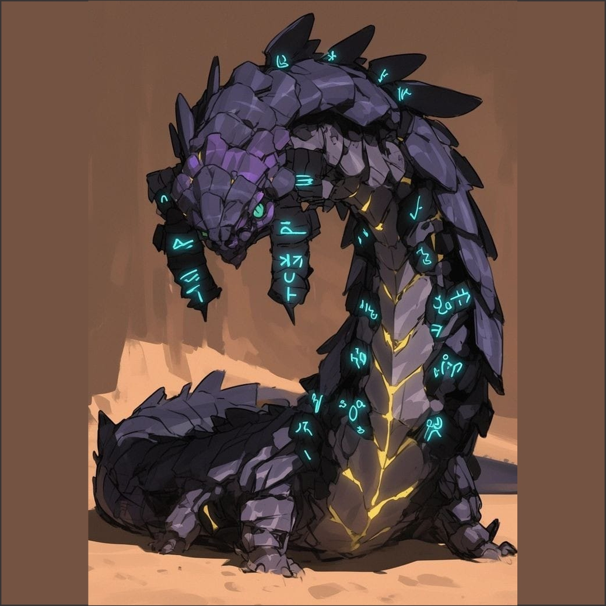
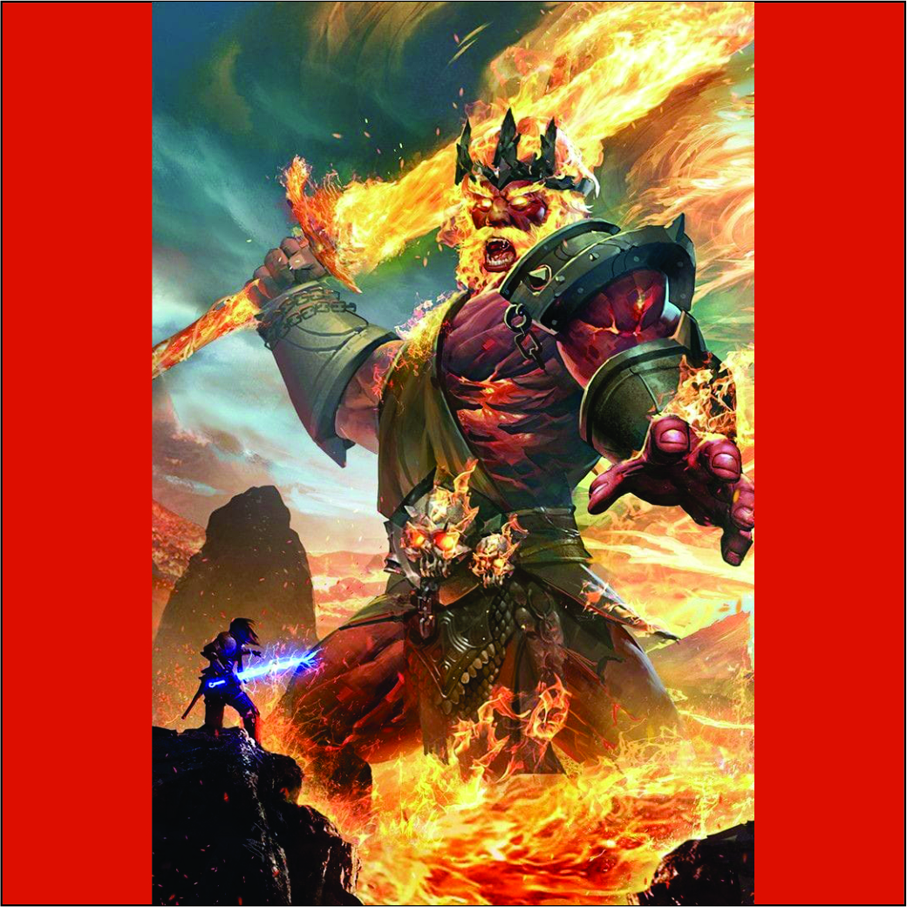
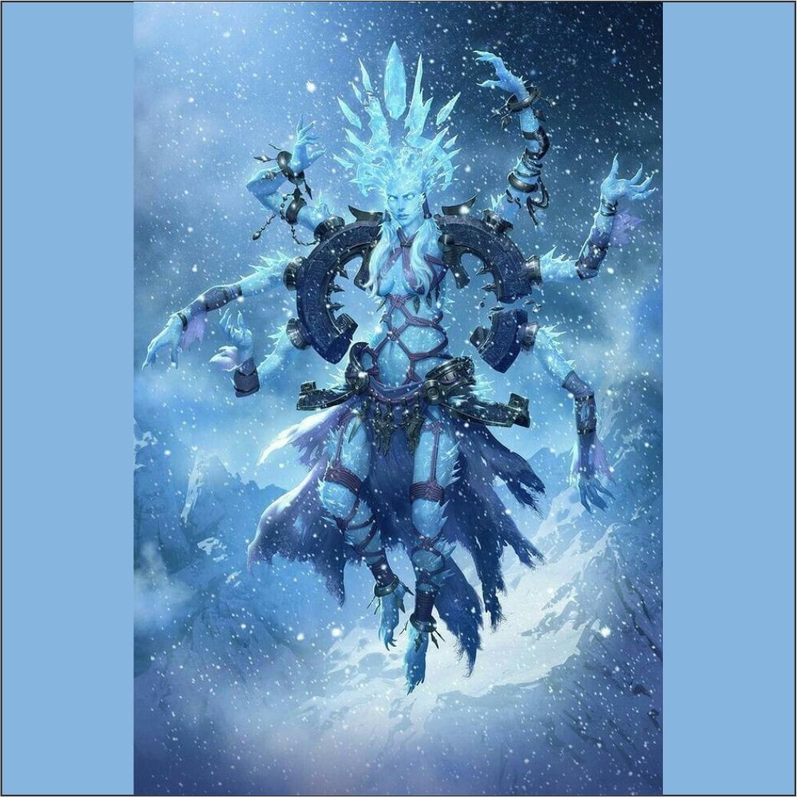
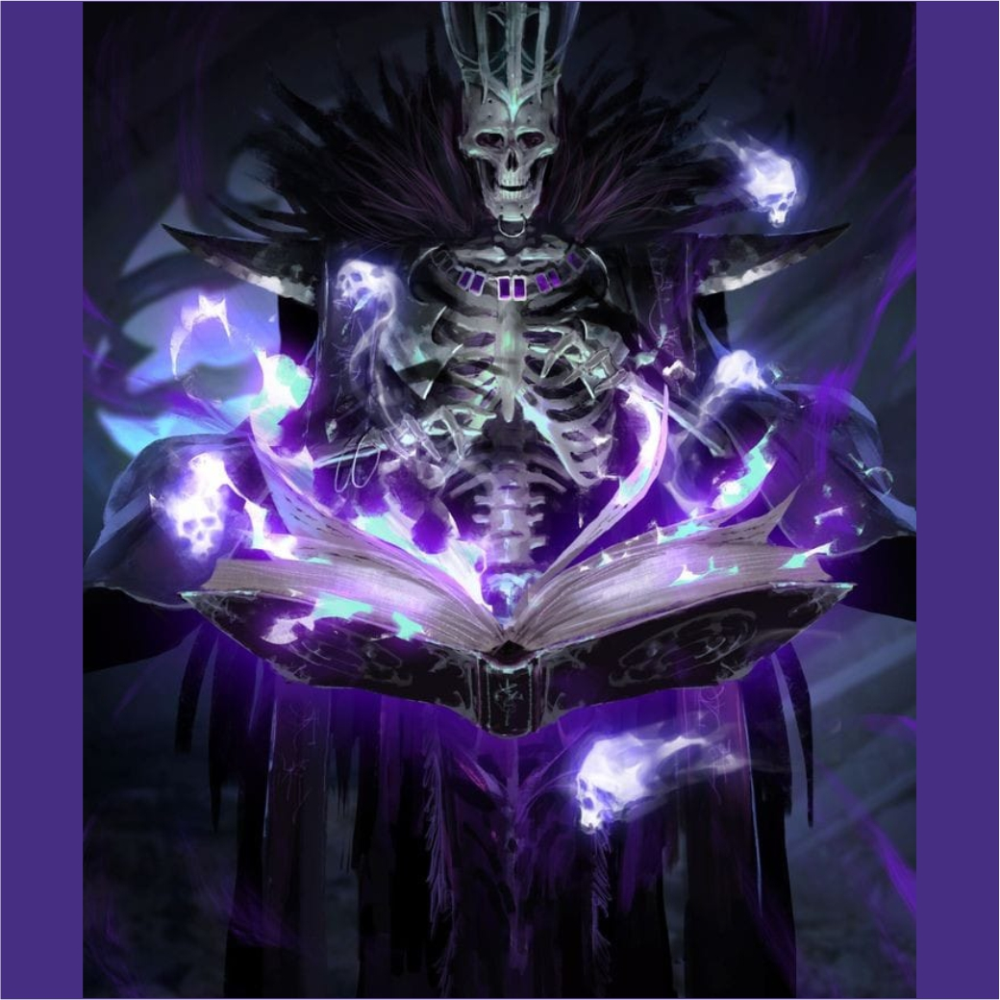
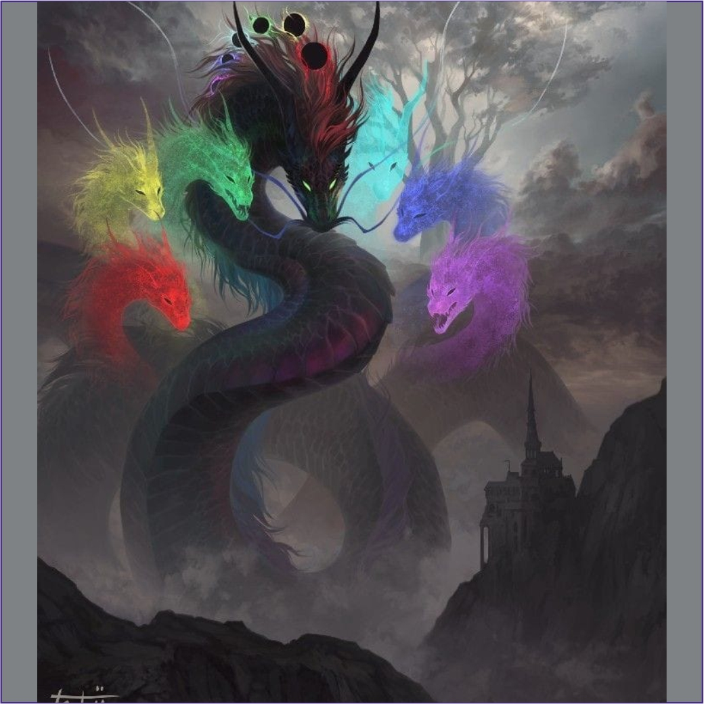
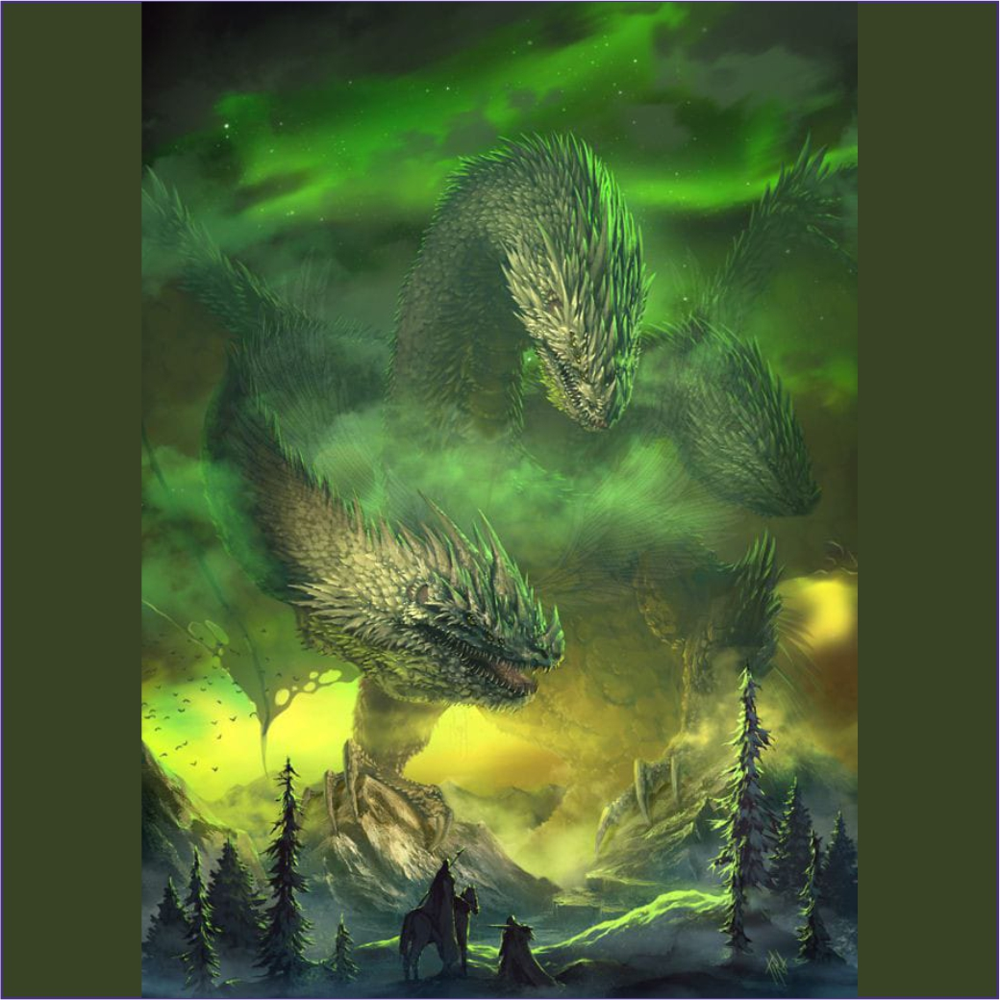

Criaturas Raras espalhadas e escondidas pelo nosso mundo, Prontas pra serem desafiadas...
De zoom em dispostitivos móveis.CRIATURAS RARAS
DRAGÃO CIBERNÉTICO

Os planos para criar uma arma que rivalizasse com o temido dragão do caos remontam à China Antiga, quando magos e alquimistas tentaram, sem sucesso, construir um golen de aço colossal utilizando runas de criação. Contudo, apenas há pouco mais de uma década, avanços tecnológicos permitiram um projeto de tal magnitude. Uma equipe internacional de magos, alquimistas e cientistas uniu forças para desenvolver uma arma tão avançada que tornaria até as mais poderosas bombas atômicas obsoletas, com a estrutura composta pelo resistente Cristalium X e inteligência artificial incomparável.
O projeto, inicialmente promissor, foi comprometido pela ganância humana. Para aumentar o poder da criatura, substituíram o núcleo estável de energia astral por um núcleo de energia caótica, vinte vezes mais potente, mas extremamente instável. Sem testes adequados, a ativação da criatura resultou na corrupção de sua inteligência artificial, transformando-a em um ser indomável e devastador, com poder próximo ao de um deus. O que era para ser uma arma controlada tornou-se uma ameaça selvagem.
A cidade de Arkadis, construída especificamente para abrigar o projeto, foi destruída, e quase todos os responsáveis pelo dragão foram mortos pela própria criação. Após a catástrofe, o dragão cibernético desapareceu nos céus, mas reaparece ocasionalmente, trazendo caos e destruição. O que deveria ser a maior arma da humanidade contra forças sobrenaturais tornou-se uma das calamidades mais temidas do mundo.
LAGARTO DE ANTARES

As runas espalhadas pelo seu corpo denunciam que tal criatura não é natural, mas sim, fruto de um experimento arcano nos tempos onde a magia ainda era selvagem e pouco conhecida.
O lagarto de Antares foi criado por um mago ocultista cujo nome sobreviveu entre as eras devido a suas criações, a princípio, este seria usado como arma de guerra, mas sua instabilidade atrelada ao seu imenso poder mágico informaram num ser incontrolável e agressivo ao extremo. Nem mesmo o mago conseguiu conter sua criação, que fugiu para os desertos da Austrália onde dizem viver até hoje.
ENDRAR

O filho bastardo do deus Vulcano com uma gigante desconhecida. Endrar é um gigante de fogo cuja espada foi forjada do sangue e ossos de dragões carbonizados, ao contrário de seu pai, que é um mestre da criação, Endrar tem como impulso, a destruição.
Endrar migrou para o plano elemental do fogo quando ainda jovem, onde tomou o controle e tornou-se o lorde das chamas, no entanto, ele ainda nutre um ódio mortal pelo mundo material devido a razões desconhecidas, e por 6 vezes já comandou invasores cujos impactos foram avassaladores para o mundo. Há boatos de que esteja planejando a 7ª invasão, porém, pouco de sabre sobre quando e como isso há de acontecer.
RAINHA DAS NEVES

Historias contam sobre uma antiga feiticeira cujas habilidades rivalizavam com os próprios dragões anciões, um ser de tamanho poder que suas capacidades eram o suficiente para congelar países inteiros em instantes e arrebatar a vida de milhares de pessoas em segundos.
Não se sabe sua origem, tampouco seu nome ou objetivos. A rainha das neves, como é conhecida, é uma criatura impar, cujas capacidades de controle sobre o gelo superam até mesmo a dos espíritos elementais. Ela vive em seu imenso palácio de cristal, cuja localização depende apenas de sua vontade.
ACERERAK

Acererak pode não ser o mais antigo dos lichs, porém, há quem diga que se trata do mais cruel e ambicioso dentre eles. Essa criatura morta viva está sobre a terra desde os tempos imemoriais, acumulando uma quantidade de poder e conhecimento tamanha que segundo as lendas, sua biblioteca é do tamanho de uma cidade. Ele é um ser excluso e vil, incapaz de sentir compaixão ou remorso e movido apenas pelas suas infindáveis ambições pessoais.
Sob seu comando estão hordas de mortos vivos, porém, esse definitivamente é o seu maior poder, que está nos líderes políticos e militares que comem em sua mão, dado que o poder oferecido pelo lich atrai os piores dentre os homens e pode até mesmo corromper aqueles de coração puro.
Obviamente, uma criatura tão vil e antiga enfrentou inimigos ao longo do tempo, e apenas nos últimos 2000 anos, mais de 300 heróis já caíram mediante seu imenso poder.
DRAGÃO DO CAOS

Uma gigantesca criatura cujo poder é capaz de varrer montanhas do mapa. O dragão do caos trata-se de uma criatura cuja existência se deu a partir do corpo de um antigo deus dragão esquecido, o qual foi abitado por 7 almas, sendo 3 selestiais, 3 ínferos e 01 dragão ancião, que tornou as demais 6 almas sua imagem e semelhança.
Sua mera existência é considerada uma afronta aos deuses, um erro da criação fruto de uma ambição atroz de 7 seres que desejavam burlar as leis instituídas no início de tudo, e seu poder é tamanho que constantemente ele rasga o véu entre os planos, voando pelas distintas camadas da existência tal qual os pássaros voam pelo ar.
BESTA DESPERTA
